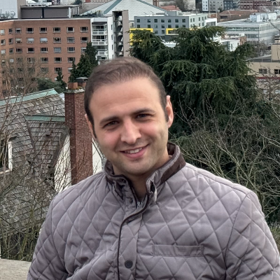
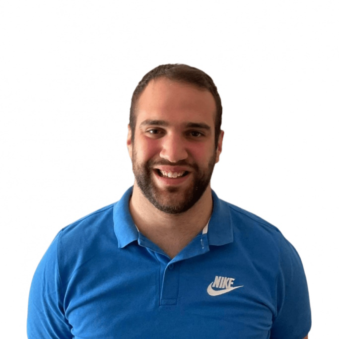
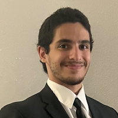

People
Dr. Logan E. Beaver
Principal Investigator
Dr. Beaver is an assistant professor in the Mechanical and Aerospace Engineering Department at ODU.

Hossein Gholampour
PhD Student
Hossein is developing compliant control methods for manipulation.

Johan Jallah
MS Student
Johan is exploring sparse kernel-based learning in Banach spaces.

Filippos N. Tzortzoglou
Visiting PhD Student
Filippos is a visiting PhD student designing emerging mobility systems.
Brock Marcinczyk
Undergraduate Researcher
Brock is developing physics-based optimal control algorithms.

Yusef Beitazzam
Undergraduate Researcher
Yusef is working on AI-enabled mobile manipulation.